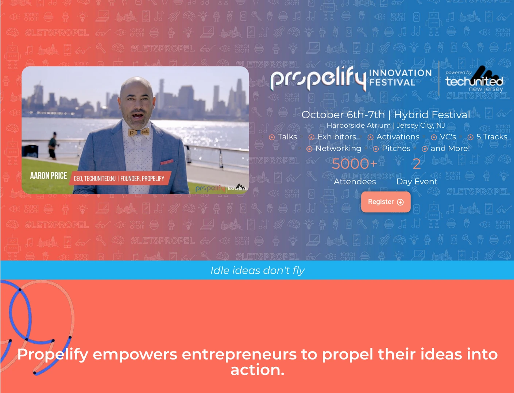
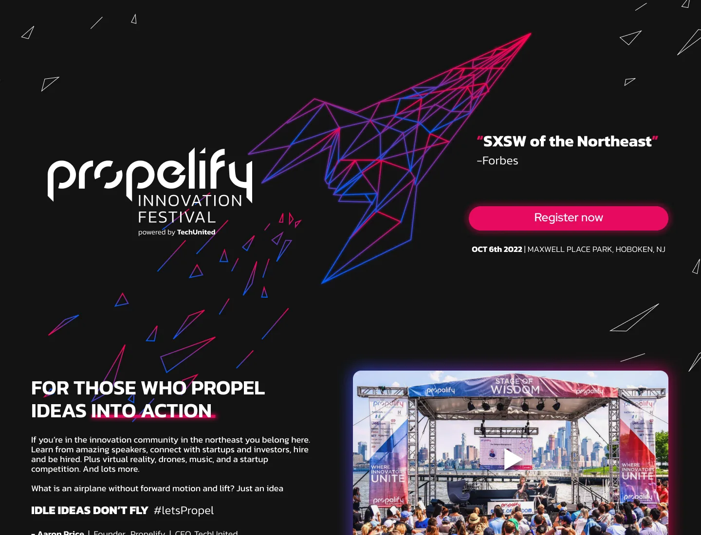
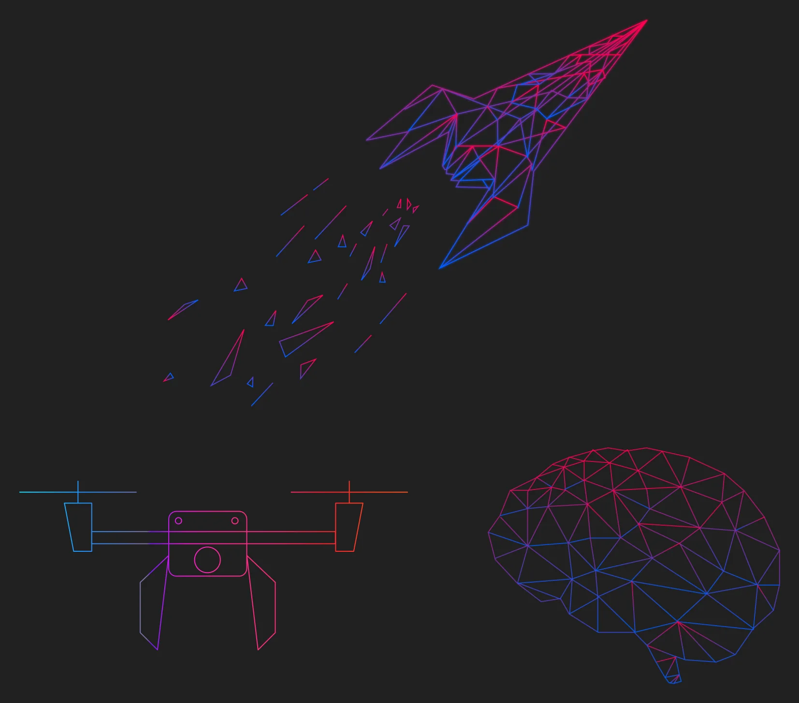
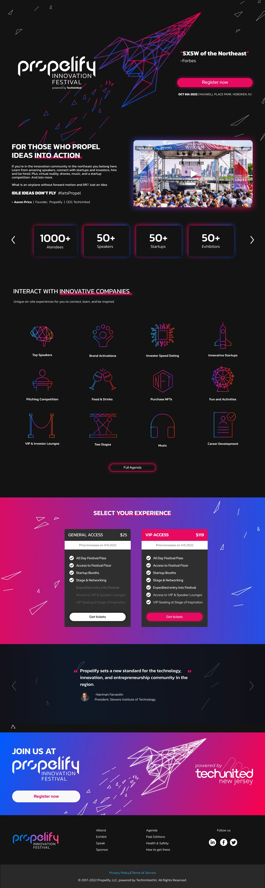
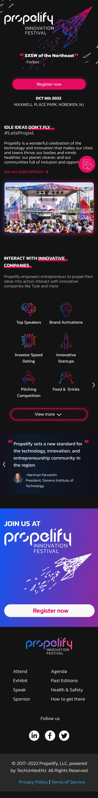
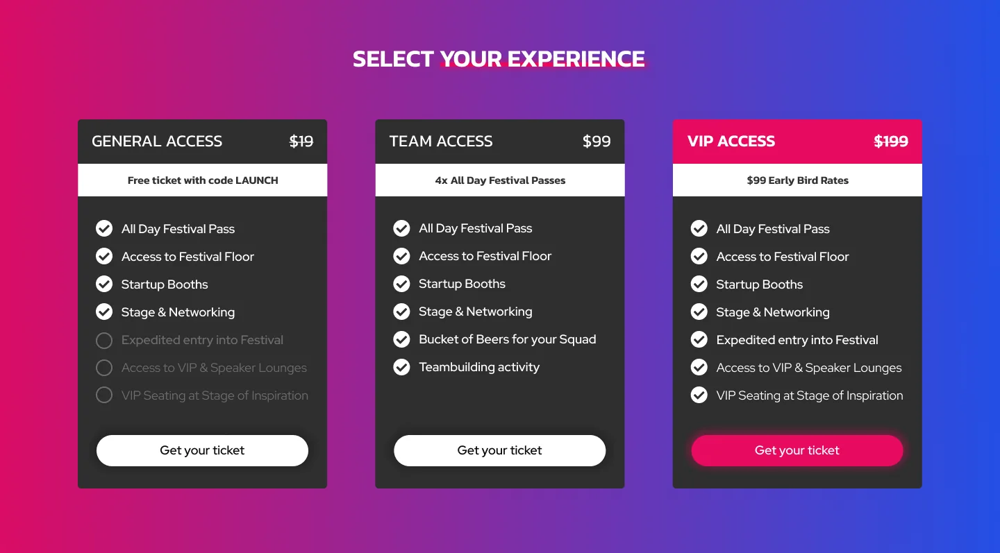
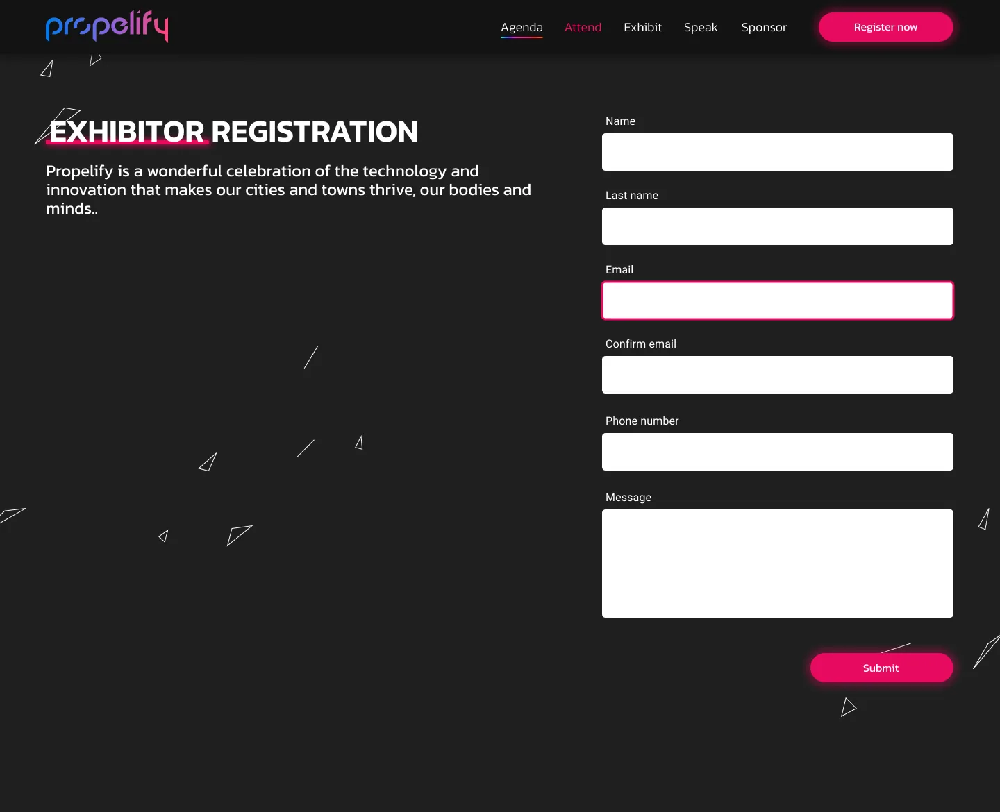
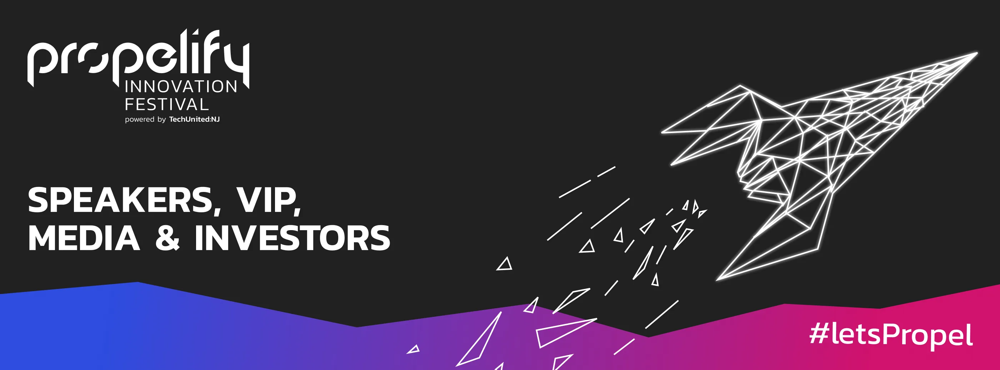

Rebranding y sitio web del Propelify Innovation Festival
Una identidad para el “SXSW del Noreste”
Propelify es el festival de innovación de TechUnited:NJ, frente al río Hudson. Su sitio era coral y azul, y su home era 2,6 veces más larga que la de TechCrunch Disrupt. Lideré el rebranding y rediseñé el sitio, de la home a las inscripciones y las entradas, y llevé la identidad a la señalética del festival. El sistema se usó durante más de tres años.

- Rol
- Diseñador líder, rebranding y sitio web
- Cliente
- TechUnited:NJ
- Alcance
- Identidad, arquitectura de información, sitio web, inscripciones, entradas, señalética
- En uso
- Más de tres años
De un vistazo
El problema
Una home que intentaba decir todo a la vez, en colores que no se sentían de festival de tecnología.
Qué hice
Una identidad nueva, un recorrido por audiencia, formularios para expositores, oradores y sponsors, un checkout en dos pasos y señalética.
El resultado
El festival funcionó con este sistema durante más de tres años, hasta su página de entradas de 2024.
El negocio
Un festival que vende una comunidad
TechUnited:NJ es una organización sin fines de lucro, sostenida por sus miembros, que ayuda a las empresas y los fundadores tech de Nueva Jersey a conectarse y crecer. Propelify es su escenario más grande.
Desde 2016 el festival llevó a más de 40.000 personas a la costanera frente a Manhattan, junto con cientos de expositores y oradores como Arianna Huffington y Gary Vaynerchuk. Cada edición también tiene una competencia de startups con 100.000 dólares en premios en efectivo.
El festival es la forma en que TechUnited:NJ construye su marca y su influencia. Durante un día pone a la organización en el centro de la comunidad tech de Nueva Jersey, conectando fundadores con inversores y empresas, y esa posición le da voz con sponsors y socios el resto del año. Las entradas, los stands y los patrocinios pagan el evento, y los miembros y socios que atrae sostienen a la organización.
Para un evento de un día, el sitio hace la mayor parte de la venta: convierte la curiosidad en una entrada y convence a expositores, oradores y sponsors de que el público correcto va a estar ahí.
Para diseño, eso significaba atender cuatro decisiones a la vez: comprar una entrada, reservar un stand, postularse para hablar y patrocinar. Cada una necesitaba su propio recorrido desde el header, y ninguna podía tapar a las otras.
El punto de partida
Todo en una sola página, en coral y azul
Comparé el sitio viejo con dos festivales con los que Propelify compite por la atención, Collision y TechCrunch Disrupt. La home de Propelify era 2,6 veces más larga que la de TechCrunch: cada orador, sponsor, actividad y dato logístico apilado en una sola página, debajo de un patrón de íconos recargado. Forbes ya llamaba a Propelify el “SXSW del Noreste”, y el sitio parecía una feria local. La marca tenía que ponerse a la altura de la reputación, sobre todo para los sponsors que decidían dónde poner su presupuesto de eventos.


La idea
Un cohete para un festival que se llama como impulsar ideas
El nombre ya tenía el concepto: propel, impulsar. La identidad lo convirtió en un cohete dibujado con líneas low-poly, sobre una base casi negra que se siente como un evento nocturno, con un rosa intenso para las acciones y un degradé de azul eléctrico a rojo rosado. La tipografía es Kanit en todo el sistema.
- Noche
#131312Fondo - Rosa Propel
#E60A60Acciones y destacados - Degradé del cohete
#005DFF → #FF004DIdentidad e ilustración - Superficie
#202020Formularios y tarjetas

Para quién es
Cuatro públicos, cuatro puertas de entrada
El festival reúne a gente que va por motivos distintos. El sitio mantuvo los cuatro recorridos que tenía el viejo, Attend, Exhibit, Speak y Sponsor, y le dio a cada uno una página que termina en su propio formulario.
Attend
Fundadores, inversores y talento tech. Tienen una página de entradas con tres niveles y un checkout en dos pasos.
Exhibit
Startups y empresas que quieren un stand. Se inscriben con su propio formulario.
Speak
Personas que quieren subir al escenario. Su postulación pide formato, tema y experiencia.
Sponsor
Marcas y socios, de inversores a medios. Su postulación pregunta cuál de ellos son.
Arquitectura de información
Las audiencias adelante, la logística un nivel más abajo
El header tiene las cuatro audiencias y Register now. Todo lo que un visitante necesita una vez que decidió ir pasó a un segundo nivel y al footer, cada cosa con su propia página, en lugar de vivir en la home.
Header
¿Quién sos?
- Attend
- Exhibit
- Speak
- Sponsor
- Register now
Segundo nivel y footer
Una vez que vas
- Agenda
- Past editions
- Health & Safety
- How to get there
- Terms of Service
Páginas de tareas
Un formulario por tarea
- Tickets and checkout
- Exhibitor registration
- Speaker registration
- Sponsor application
- Fundraising Forum applications
La página del Fundraising Forum permitía a los fundadores postularse para reuniones con inversores en el Investor Lounge del festival, agrupados por etapa, industria y región.
El trabajo de la home
De “¿qué es esto?” a “voy” en una sola pantalla
Un visitante nuevo necesita cuatro respuestas antes de inscribirse. La home las responde todas arriba del video.
¿Qué es?
El nombre y “Innovation Festival” debajo, armados como una sola pieza.
¿Vale la pena un día?
Una frase de Forbes, de alguien que no es parte de la organización.
¿Cuándo y dónde?
Fecha y lugar, justo debajo del botón.
¿Cómo voy?
Register now: el único botón con relleno, en el rosa de la marca.
Una mirada más de cerca
El nombre, dibujado como un cohete
La home de la edición 2022, que se hizo el 6 de octubre en Maxwell Place Park, en Hoboken.
Marcador 1: Un cohete hecho de triángulos
“Propel” se convierte en una forma. Sus fragmentos se dispersan por la página, así la identidad funciona como patrón además de como logo.
Marcador 2: La prueba antes del botón
Que Forbes lo llame el “SXSW del Noreste” está justo arriba de la decisión, donde una duda frenaría a alguien.
Marcador 3: Una acción, con lo básico debajo
Register now, con la fecha y el lugar abajo, para que nadie tenga que scrollear para saber cuándo y dónde.
Marcador 4: Una voz que empuja
“Idle ideas don’t fly” convierte el nombre en un llamado a actuar, con #LetsPropel listo para redes.
Marcador 5: El festival, a la vista
Un video del escenario principal, con el skyline de Manhattan detrás del público, dice más del día que cualquier párrafo.
El sitio final
La home, en desktop y mobile
El festival en números, las actividades, los tipos de entrada, la frase de un asistente anterior y un último llamado a inscribirse. Scrolleá dentro de cada pantalla.


Home mobileScrolleá dentro de la pantalla
Entradas y formularios
Donde el sitio hace su plata
Las entradas vienen en tres niveles, para que la diferencia entre ellas se lea de un vistazo. Comprar una lleva dos pasos: elegir las entradas y completar la facturación, y después revisar el pedido y pagar, con un campo para cupón y un voucher de bebida opcional en el camino.

- Paso 1 · Entradas y facturaciónElegir el tipo de entrada y la cantidad, y completar los datos de facturación, en la misma pantalla.
- Paso 2 · Pedido y pagoRevisar el pedido, aplicar un cupón, sumar un voucher de bebida opcional y pagar.

Fuera de la pantalla
El mismo cohete, del navegador al predio del festival
Empezó como un rediseño del sitio y terminó cerca de un rebranding completo. TechUnited llevó la identidad al merchandising y vistió el propio festival con los colores del sitio. Cada cartel termina en la misma onda de azul a rosa, así las áreas de oradores, los paneles de sponsors y los agradecimientos a los socios se leen como una sola familia.

En retrospectiva
Qué funcionó
Darle una forma al nombre. Un cohete hecho de triángulos funcionó como logo, patrón, estilo de ilustración y sistema de señalética, y por eso duró más allá del sitio y se usó durante más de tres años.
Qué se me pasó
Los sponsors son una de las principales fuentes de plata de un festival, y aun así el recorrido de Sponsor terminaba en un formulario de postulación. Una empresa que decide dónde gastar su presupuesto de eventos quiere tres respuestas antes de escribirle a nadie: a quién va a llegar, qué recibe y por qué vale la pena pagar un nivel más alto. La página tendría que vender, con el formulario al final.
Cómo podría funcionar esa página
Mostrar primero el público
Los números que un equipo de marketing reporta hacia arriba: más de 40.000 asistentes desde 2016, y la mezcla de fundadores, inversores e innovadores corporativos que hay en el lugar.
Que cada nivel sume algo que se vea
Los niveles de entrada compran visibilidad, un logo en el sitio y en los carteles. Los del medio suman presencia, un stand y pases para el equipo. El más alto suma una voz: un escenario, un espacio para hablar, acceso al Investor Lounge.
Que el nivel más alto haga la venta
Comparado lado a lado, el salto entre niveles debería parecer chico al lado de lo que suma. Eso mantiene atractivo el nivel del medio y hace del más alto un caso fácil de llevar a una reunión de presupuesto.